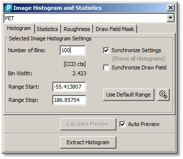
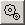
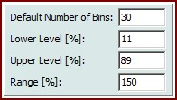
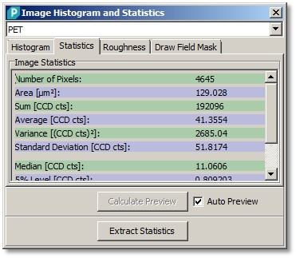
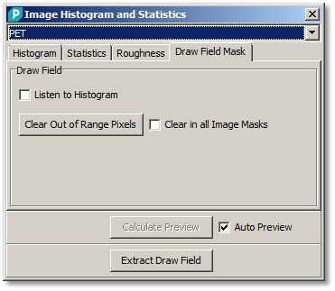
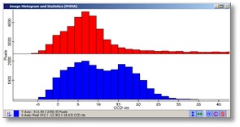
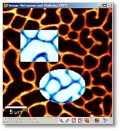

|
描述
图像统计对话框可用于通过显示直方图和多种统计参数来分析图像。
另请参阅
输入与结果
输入：
任意数量的图像。
结果：
直方图或包含统计或粗糙度信息的文本对象。
用户界面

分箱数（整数编辑框）：
设置直方图的分箱数或"垂直线"数。
[CCD cts]（标签）：
显示当前选定图像的值单位。
分箱宽度（标签）：
显示一个直方图线的分箱宽度。
范围开始/停止（浮点编辑框）：
定义直方图的开始和停止范围。两个值在启动时自动计算；每个放置的图像有自己的范围。
同步设置（复选框）：
仅在所有图像共享相同值单位类型时启用。如果勾选：所有放置图像的所有直方图在一个图谱预览中一起显示；所有直方图共享相同的范围和分箱数。如果未勾选，每个直方图有自己的分箱数和范围。
同步绘制字段（复选框）：
仅在所有图像共享相同空间变换（同一测量）时启用。如果勾选，当前绘制字段用于所有放置的图像。否则每个图像有自己的绘制字段，定义哪些像素用于直方图和统计计算。
使用默认范围（按钮）：
使用范围确定的默认设置重置当前直方图的开始和停止范围（见下文）。

默认范围设置（工具按钮）
默认分箱数（整数编辑框）：
对话框打开时使用的分箱数。
下水平（浮点编辑框）：
用于默认范围值确定的所有排序图像值的下水平。
上水平（浮点编辑框）：
用于默认范围值确定的所有排序图像值的上水平。
范围（浮点编辑框）：
使用下和上水平后用于扩展范围的范围。
计算预览（按钮），自动预览（复选框）：
参见自动预览。
提取直方图（按钮）：
计算并提取所有图像的所有直方图。

统计选项卡显示多种图像统计值，如平均值或方差。这些值针对当前图像掩模中设置的所有像素计算（参见预览图像查看器）。
提取统计（按钮）
创建包含所有统计参数的新文本对象。
粗糙度选项卡非常相似。它不是标准统计参数，而是显示特殊的粗糙度参数（特别用于形貌图像）。
有关粗糙度参数的详细描述，请参见图像统计（数学）。

监听直方图（复选框）：
如果勾选，您可以在预览图谱查看器的直方图中设置或清除（按住 Shift 键）一个区域，以设置或清除图像掩模中的相应像素。
清除超出范围像素（按钮）
此操作将清除图像掩模中所有值超出直方图当前范围的像素。
清除所有图像掩模（复选框）
如果勾选，上述按钮会影响所有图像掩模（如果掩模不是已经同步）。
提取绘制字段（按钮）
将所有绘制字段作为新的布尔图像数据对象提取到当前项目。

图谱预览窗口显示直方图。提示：您可以打开或关闭级联模式，以并排或级联方式查看直方图线。

图像预览窗口显示当前选定的图像和定义哪些像素用于直方图和统计计算的掩模。